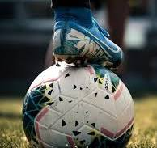
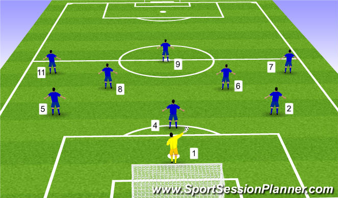
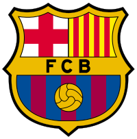

Games like football have been played around the world since ancient times. The game came from England, where the Football Association wrote a standard set of rules for the game in 1863.
The game originated in China, for their army. The players had a very heavy ball and goals high. England took the idea of the Chinese game and changed the rules a bit and now it is the modern game we know today.
Each team has 11 players on the field. One of these players is the goalkeeper, the only player who is okay to touch the ball with their hands. The other ten are known as "outfield players". The players try to kick the ball into their opponents' goal.
if you want to know more go on this site and give us your thoughts about it
Click For More InformationLets Talk About FC Barcelona
Futbol Club Barcelona (Catalan pronunciation: [fubˈbɔl ˈklub bəɾsəˈlonə] ⓘ), commonly known as Barcelona and familiarly as Barça ([ˈbaɾsə]), is a professional football club based in Barcelona, Catalonia, Spain, that competes in La Liga, the top flight of Spanish football.
Founded in 1899 by a group of Swiss, Catalan, German, and English footballers led by Joan Gamper, the club has become a symbol of Catalan culture and Catalanism, hence the motto "Més que un club" ("More than a club").
Domestically, Barcelona has won a record 77 trophies: 27 La Liga, 31 Copa del Rey, 14 Supercopa de España, three Copa Eva Duarte, and two Copa de la Liga titles, as well as being the record holder for the latter four competitions. In international club football, the club has won 22 European and worldwide titles: five UEFA Champions League